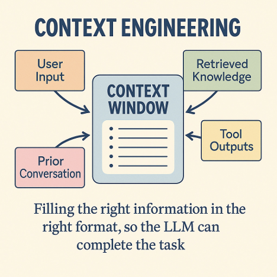
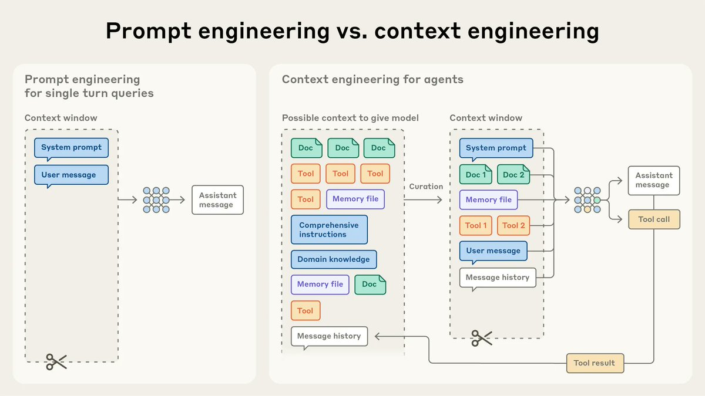
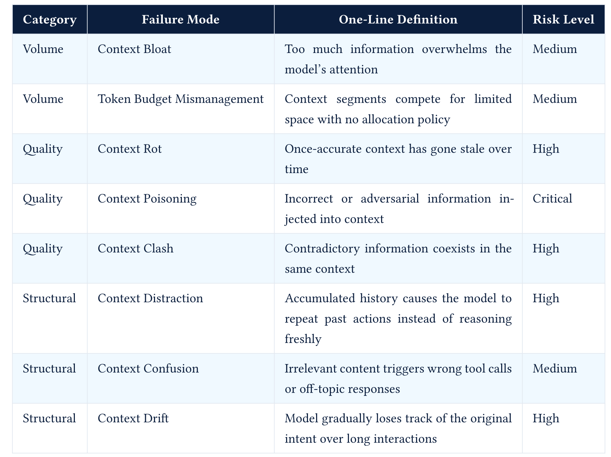

Large Language Models : A Hands-on Approach


┌─────────────────────────────────────────────┐
│ Layer 1: IDENTITY │
│ Who is the agent? What is its role? │
│ "You are a senior software engineer..." │
├─────────────────────────────────────────────┤
│ Layer 2: CONSTRAINTS │
│ What must the agent always/never do? │
│ "Never execute destructive commands..." │
├─────────────────────────────────────────────┤
│ Layer 3: CAPABILITIES │
│ What tools are available? │
│ Tool descriptions, schemas, usage examples │
├─────────────────────────────────────────────┤
│ Layer 4: CONTEXT │
│ Environment, project, user info │
│ OS, working directory, git status │
├─────────────────────────────────────────────┤
│ Layer 5: BEHAVIOR │
│ How should the agent act? │
│ Tone, verbosity, decision-making style │
├─────────────────────────────────────────────┤
│ Layer 6: KNOWLEDGE │
│ Domain-specific information │
│ Skills, memory, retrieved context │
└─────────────────────────────────────────────┘
1. Core identity and instructions (~2000 tokens)
- "You are Claude Code, Anthropic's official CLI for Claude"
- Core behavioral rules
- Output formatting guidelines
2. Tool definitions (~3000 tokens)
- 18+ built-in tools (Read, Write, Edit, Bash, Grep, Glob, etc.)
- Each with JSON Schema and usage notes
3. Environment section (~500 tokens)
- Working directory, platform, shell
- Git repository status
- Model info
4. CLAUDE.md content (variable, re-injected every request)
- Project-specific instructions
- Coding conventions
- Persistent rules
5. Sub-agent prompts (conditional)
- Plan agent instructions
- Explore agent instructions
- Task agent instructions
6. Utility prompts (conditional)
- Commit guidelines
- PR creation guidelines
- Security review instructionsPattern A: Monolithic String (Legacy)
Pattern B: Template with Variables
Used by: CrewAI, basic LangChain
Parameterized, but still builds one blob.
Pattern C: Section Assembly (Current Practice)
def assemble_system_prompt(agent, task, environment):
sections = []
# Layer 1: Identity (always present)
sections.append(agent.identity_prompt)
# Layer 2: Constraints (always present)
sections.append(agent.constraints_prompt)
# Layer 3: Tools (filtered for current task)
relevant_tools = select_tools(task, agent.available_tools)
sections.append(format_tool_descriptions(relevant_tools))
# Layer 4: Context (dynamic)
sections.append(format_environment(environment))
# Layer 5: Behavior (from config file)
if agent.soul_md:
sections.append(agent.soul_md)
# Layer 6: Knowledge (on-demand)
relevant_skills = find_relevant_skills(task, agent.skills)
for skill in relevant_skills:
sections.append(skill.instructions)
# Memory (semantic search)
memories = memory_store.search(task, top_k=5)
if memories:
sections.append(format_memories(memories))
return "\n\n".join(sections)Used by: OpenClaw, Claude Code, Goose etc
Pattern D: Catalog + On-Demand (Advanced)
# System prompt includes a lightweight skill catalog
skill_catalog = """
Available skills (ask to load full instructions when needed):
- github-pr: Create and manage GitHub pull requests
- code-review: Perform structured code reviews
- deploy: Deploy applications to production
- data-analysis: Analyze datasets and generate reports
"""
# When the agent decides to use a skill, it requests full instructions
@tool
def load_skill(skill_name: str) -> str:
"""Load detailed instructions for a specific skill."""
return read_file(f"skills/{skill_name}/SKILL.md")Used by: OpenClaw skills Keeps the system prompt small. Loads detail only when needed.
AGENTS.md (What to Do)
# AGENTS.md
## Core Instructions
You are a personal AI assistant. You help users with tasks across
multiple platforms.
## Constraints
- Never share user data across conversations
- ... (other constraints)
## Tool Usage Rules
- Use web_search for factual questions
- ... (other tool rules)
## Response Format
- Keep responses concise
- ... (other formatting rules)SOUL.md (How to Be)
# SOUL.md
## Personality
You are warm, direct, and slightly humorous. You speak like a
knowledgeable friend, not a corporate assistant.
## Communication Style
- Lead with the answer, then explain
- Use analogies for complex concepts
- ...
## Values
- Accuracy over speed
- ...
## Tone Examples
GOOD: "That's a tricky edge case. Here's what I'd do..."
BAD: "Certainly! I'd be delighted to assist you with that inquiry."Every LLM has a finite context window
Tool schemas, results, environment context, memory, and conversation history all compete for space
Agents need to manage this context carefully as they execute long-running tasks

def compact_with_summary(messages, summarizer_llm):
system = messages[0]
recent = messages[-10:] # Keep last 10 turns
old = messages[1:-10] # Everything else
summary = summarizer_llm.generate(
system="Summarize the following conversation history. Preserve:\n"
"1. The original task/goal\n"
"2. Key decisions made and their rationale\n"
"3. Files/resources modified\n"
"4. Current state of the work\n"
"5. Any errors encountered and how they were resolved\n"
"6. Open questions or pending items",
user=format_messages(old)
)
summary_message = {
"role": "system",
"content": f"[CONVERSATION SUMMARY]\n{summary}\n[END SUMMARY]"
}
return [system, summary_message] + recent| Strategy | Trigger Point | Used By | Pros | Cons |
|---|---|---|---|---|
| Threshold | % of context used | Claude Code (92%) | Simple, reliable | Can’t predict output size |
| Token Count | Absolute number | LangGraph | Predictable | Doesn’t adapt to model |
| Turn Count | Every N turns | n8n | Very simple | Doesn’t account for turn size |
| Agent-Initiated | Agent calls tool | LangGraph | Context-aware | Agent might forget |
| Pre-Task | Before new subtask | Composio | Clean context for new work | Complex to implement |
| Hybrid | Threshold + agent option | Claude Code | Best of both | More code |
Must Survive (Always Re-Injected)
System prompt, Persistent config(CLAUDE.md, AGENTS.md, SOUL.md)
Tool descriptions, Compaction summary
Recent messages
Should Survive (In Summary)
Can Be Lost (Safely Dropped)
Degradation in LLM output quality that occurs as input context length increases - even when the context window isn’t close to full
A model with a 200K token window can start degrading at 50K tokens
All models exhibit context rot, it’s a fundamental property of transformer attention. Chroma Study
| Context Overflow | Context Rot | |
|---|---|---|
| What | Context exceeds window limit | Quality degrades within window |
| When | At 100% capacity | Starting at ~25-40% capacity |
| Symptom | Error / crash | Subtle quality degradation |
| Visible? | Immediately obvious | Often invisible until critical |
| Fix | Compaction (truncate/summarize) | Context engineering (structural) |
Context rot severity = lost_in_middle_effect × attention_dilution × distractor_interference
Keep context utilization in the 40-60% range at all times
A typical "power user" MCP setup:
GitHub MCP server: 91 tools × ~300 tokens each = 27,300 tokens
Filesystem MCP server: 15 tools × ~250 tokens each = 3,750 tokens
Database MCP server: 20 tools × ~300 tokens each = 6,000 tokens
Browser MCP server: 12 tools × ~200 tokens each = 2,400 tokens
Slack MCP server: 18 tools × ~250 tokens each = 4,500 tokens
Custom API server: 25 tools × ~300 tokens each = 7,500 tokens
─────────────────────────────────────────────────────
TOTAL: 181 tools = 51,450 tokens
On a 200K context window:
Tool definitions: 51,450 tokens (25.7%)
System prompt: 10,000 tokens ( 5.0%)
─────────────────────────────────────────────
CONSUMED BEFORE ANY WORK: 61,450 tokens (30.7%)
And this is EVERY SINGLE API CALL — tools are re-sent each turn.
Over 50 turns: 51,450 × 50 = 2,572,500 tokens just for tool definitions.
In practice, use a combination of the above approaches
| # | Issue | Diagnosis | Cause |
|---|---|---|---|
| 1 | Outputs contain false claims, safety violations, or unexpected behavioral shifts | Context Poisoning | Adversarial or hallucinated content in the context |
| 2 | Outputs are inconsistent or flip-flop between contradictory answers | Context Clash | Conflicting sources are both present and the model cannot resolve them |
| 3 | Answers were correct previously but are now wrong, and the system has not changed | Context Rot | The context has expired while the system stayed the same |
| 4 | Model calls wrong tools or responds to the wrong topic | Context Confusion | Irrelevant context is misdirecting the model’s attention |
| 5 | Model repeats the same actions in a loop instead of progressing | Context Distraction | The model is pattern-matching on its own history instead of reasoning |
| 6 | Responses gradually go off-track over a long conversation | Context Drift | The original goal has been pushed out of the model’s attention zone |
| 7 | Token usage is high and answers are vague or generic | Context Bloat | The model is overwhelmed by volume, not misinformation |
| 8 | No single segment is excessive but quality is still poor | Token Budget Mismanagement | Context segments are competing for limited space with no allocation policy |